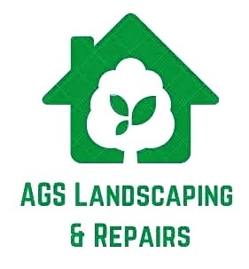
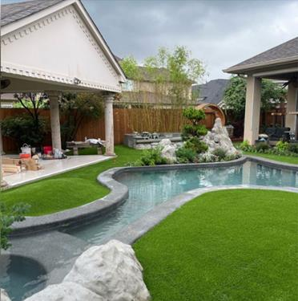

By company AGS LANDSCAPING & REPAIRS
At AGS LANDSCAPING & REPAIRS, we're dedicated to transforming your garden into an oasis of beauty and functionality since 2019. We tailor our services to your needs and budget, offering personalized solutions for each project. With us, your garden is not just a space, but a reflection of your style and personality.
We offer a wide range of services, including natural and synthetic grass installation, fence repairs, drainage, and retaining walls.
Our grass installation service is child and pet friendly.
Explore our photo and video gallery to see examples of some of the projects we've completed.
Contact us today for a free quote and start transforming your garden into the space of your dreams.
